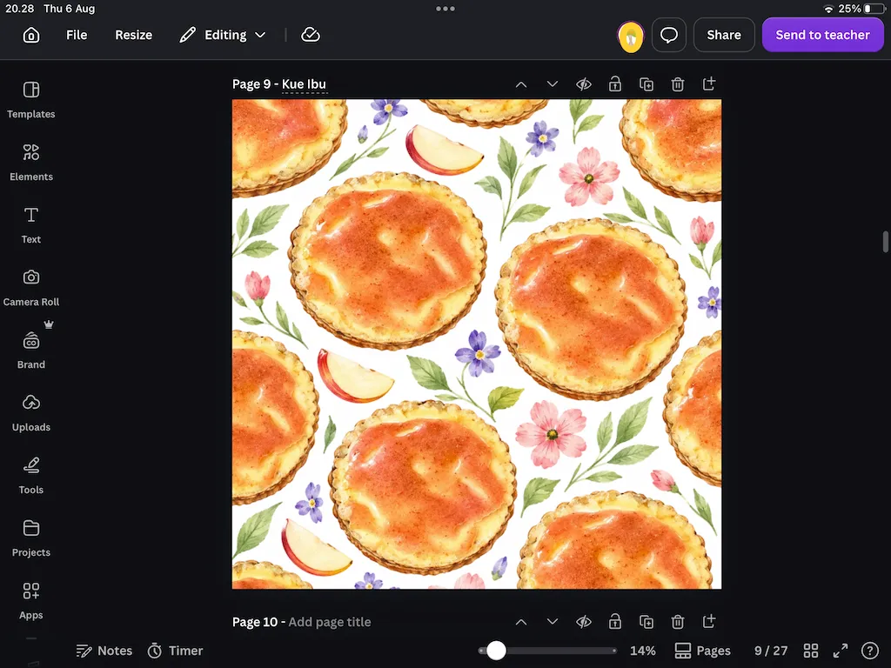
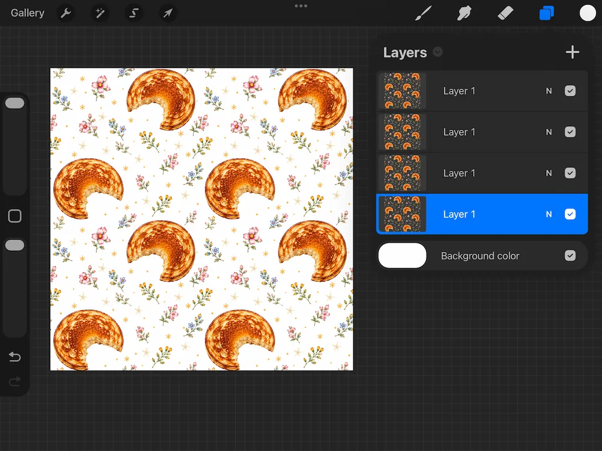
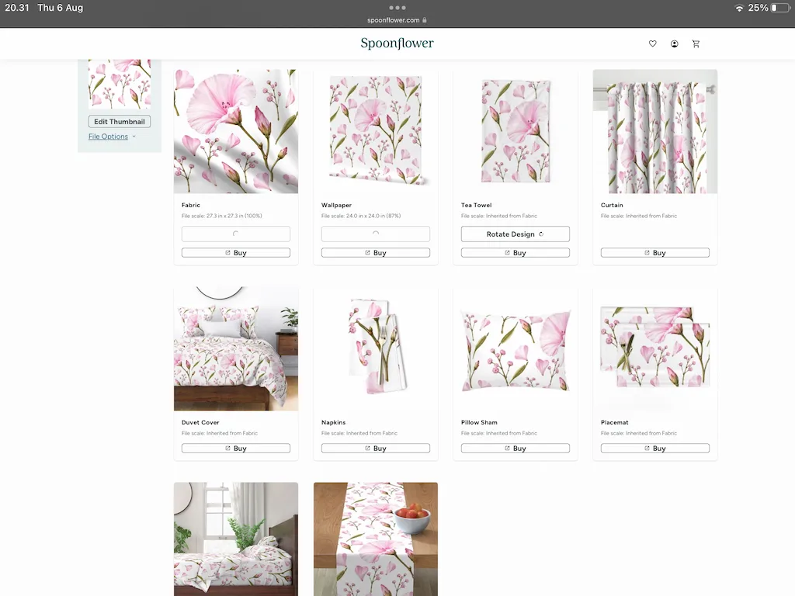

Telefon galeriniz çiçek, yiyecek, manzara, yaprak veya günlük nesnelerin fotoğraflarıyla doluysa, onları hemen silmeyin.
Belki de bu fotoğraflar henüz fark etmediğiniz dijital varlıklardır. Tek bir fotoğraf; kumaş, duvar kâğıdı, ürün ambalajı, dijital scrapbook ve microstock pazar yerleri için kullanılabilecek çeşitli seamless pattern tasarımlarına dönüştürülebilir.
Seamless Pattern Nedir?
Seamless pattern, tekrarlandığında birleşim noktaları görünmeyen bir görseldir. Bu tür pattern'ler kumaş, duvar kâğıdı, hediye ambalajı, ürün ambalajı, dijital scrapbook, web sitesi arka planı ve print-on-demand ürünlerinde yaygın olarak kullanılır.
1. Adım — Telefon Galerinizden Bir Fotoğraf Seçin
Premium bir fotoğraf satın almanız gerekmez. Kendi fotoğraflarınızla başlayabilirsiniz. Çiçekler, yapraklar, yiyecekler, kahve, bitkiler, meyveler, taşlar, vintage nesneler ve ev dekorasyonu ilham kaynağı olabilir.
Basit bir fotoğraf çoğu zaman gerçekten benzersiz bir pattern ortaya çıkarabilir.
2. Adım — AI Kullanarak Pattern'e Dönüştürün
Fotoğrafınızı seçtikten sonra AI, tek bir fotoğrafı farklı pattern kompozisyonlarına dönüştürmenize yardımcı olabilir. Böylece tüm elemanları en baştan manuel olarak yerleştirmeniz gerekmez.
Microstock için 4096 × 4096 piksel bir canvas yeterlidir. Sonuç JPEG olarak dışa aktarılabilir; şeffaf bir arka plana ihtiyaç duyduğunuzda ise PNG kullanılabilir.

3. Adım — Pattern'in Gerçekten Seamless Olduğundan Emin Olun
Tek bir görsel olarak güzel görünen bir pattern, tekrarlandığında gerçekten seamless olmayabilir. Bu nedenle yayınlamadan önce mutlaka bağlantı noktalarını kontrol edin.
Adobe Illustrator, Affinity Designer, Canva veya Procreate kullanabilirsiniz. Canva birleşim noktalarını kontrol etmek için oldukça pratiktir; Procreate ise detayları ve geçişleri düzeltmek için kullanılabilir.
Spoonflower da pattern'in kumaş, duvar kâğıdı ve çeşitli ürünler üzerindeki görünümünü simüle etmek için kullanılabilir.

Gerçek Bir Örnek
Aşağıdaki pattern, annemin hazırladığı bir kahvaltı tabağının tek bir fotoğrafıyla başladı. Başlangıçta telefon galerimde bulunan sıradan bir fotoğraftı. Seamless pattern'e dönüştürüldükten sonra kullanılabilecek ve yayınlanabilecek bir dijital varlığa dönüştü.
Bence en keyifli kısmı, basit bir fotoğrafın ticari değere sahip bir şeye dönüştüğünü görmek.

Yayında Olan Pattern Sonuçları
Aşağıda, yukarıdaki workflow kullanılarak oluşturulan bazı pattern örneklerini görebilirsiniz. Bu pattern'lerin bir kısmı Adobe Stock ve Dreamstime tarafından kabul edilmiş ve yayınlanmıştır.
Süreci Daha Hızlı Hale Getirmek İster misiniz?
Her şeye sıfırdan başlamak zorunda kalmadan pattern oluşturma sürecini hızlandırmak istiyorsanız Pattern Studio AI'ı geliştirdim.
Pattern Studio AI, tek bir fotoğrafı farklı seamless pattern fikirlerine dönüştürmenize yardımcı olur. Bu fikirleri daha sonra kendi tasarım tarzınıza göre geliştirebilirsiniz.
- Pattern tasarımını yeni öğrenenler
- Microstock katkıcıları
- Surface pattern tasarımcıları
- Print-on-demand içerik üreticileri